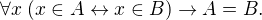
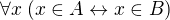
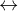
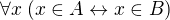
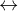
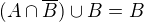
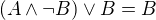
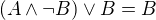

Logic and Proof
12 Sets in Lean
In the last chapter, we noted that although in axiomatic set theory
one consider sets of disparate objects, it is more common in
mathematics to consider subsets of some fixed domain, . This is the way sets are handled in Lean. For any data type U,
Lean gives us a new data type, set U, consisting of the sets of
elements of U. Thus, for example, we can reason about sets of
natural numbers, or sets of integers, or sets of pairs of natural
numbers.
12.1 Basics
Given A : set U and x : U, we can write x ∈ A to
state that x is a member of the set A. The character ∈ can be
typed using \in. We need to import the library file data.set and
open the "namespace" set to have the notions and notations made
available to us.
You can type the symbols ⊆, ∅, ∪, ∩, \ as \subeq \empty,
\un, \i, and \\, respectively. We have made the type variable
U implicit, because it can typically be inferred from context. The
universal set is denoted univ, and set complementation is denoted
with a negation symbol.
The following pattern can be used to show that A is a subset of B:
And the following pattern be used to show that A and B are equal:
Alternatively, we can use the following pattern:
Here, ext is short for "extensionality." In symbolic terms, it is
the following fact:

This reduces proving  to proving , which we can do using and  introduction.
to proving , which we can do using and  introduction.
Moreover, Lean supports the following nifty feature: the defining
rules for union, intersection and other operations on sets are
considered to hold "definitionally." This means that the expressions
x ∈ A ∩ B and x ∈ A ∧ x ∈ B mean the same thing to Lean. This is
the same for the other constructions on sets; for example x ∈ A \ B
and x ∈ A ∧ ¬(x ∈ B) mean the same thing to Lean. You can also
write x ∉ B for ¬(x ∈ B), where ∉ is written using \notin. For
the other set constructions, the defining equivalences in the last
chapter hold definitionally. The following example illustrates these
features.
Remember from Section 4.5 that we can use suppose instead of
assume without a label, and refer back to hypotheses using
backticks. We have used this feature in the previous example. Without
that feature, we could have written the examples above as follows:
Below, and in the chapters that follow, we will begin to use suppose
more often, as well as the have command without labels.
The fact that Lean can identify sets with their logical definitions makes it easy to prove inclusions btween sets:
12.2 Some Identities
Here is the proof of the first identity that we proved informally in the previous chapter:
Notice that it is considerably longer than the informal proof in the
last chapter, because we have spelled out every last
detail. Unfortunately, this does not necessarily make it more
readable. Keep in mind that you can always write long proofs
incrementally, using sorry. You can also break up long proofs into
smaller pieces:
Notice that the two propositions depend on the variables A, B, and
C, which have to be supplied as arguments when they are
applied. They also depend on the underlying type, U, but because the
variable U was marked implicit, Lean figures it out from the
context.
In the last chapter we showed . Here is the corresponding proof in Lean:
Translated to propositions, the theorem above states that for every
pair of elements  and
and  in a Boolean algebra, . Lean allows us to do calculations on propositions as
though they are elements of a Boolean algebra, with equality replaced
by
in a Boolean algebra, . Lean allows us to do calculations on propositions as
though they are elements of a Boolean algebra, with equality replaced
by ↔.
12.3 Power Sets and Indexed Families
We can also work with power sets and indexed unions and intersections
in Lean. If A : set U, then powerset A is a subset of set U,
that is, we have powerset A : set (set X). For Lean, A ∈ powerset
B means the same thing as A ⊆ B, which, in turn, means ∀x, x ∈ A →
x ∈ B.
A family of sets in Lean is written as A : I → set U where I is a
Type. Then the intersection and union of the family of sets A is
written ⋂i, A i ⋃i, A i. These characters can be typed with \I
and \Un. For Lean, x ∈ ⋂i, A i means ∀i : I, x ∈ A i and x ∈
⋃i, A i means ∃i : I, x ∈ A i. To refresh your memory at to how to
work with the universal and existential quantifier in Lean, see
Chapter 9.
12.4 Exercises
Fill in the
sorry's.import data.set open set section variable U : Type variable A : U → Prop variable B : U → U → Prop -- problem 1 example (H : ∀ x y, A x → B x y) : ∀ x, (A x → ∀ y, B x y) := sorry end section variable U : Type variables A B C : set U -- problem 2 example : ∀ x, x ∈ A ∩ C → x ∈ A ∪ B := sorry -- problem 3 example : ∀ x, x ∈ -(A ∪ B) → x ∈ -A := sorry end Fill in the
sorry.import logic data.set open eq.ops -- this allows you to use notation for the equality rules if you want open set variable {U : Type} /- defining "disjoint" -/ definition disjoint (A B : set U) : Prop := ∀ ⦃x⦄, x ∈ A → x ∈ B → false example (A B : set U) (H : ∀ x, ¬ (x ∈ A ∧ x ∈ B)) : disjoint A B := take x, assume H1 : x ∈ A, assume H2 : x ∈ B, have H3 : x ∈ A ∧ x ∈ B, from and.intro H1 H2, show false, from H x H3 -- notice that we do not have to mention x when applying H : disjoint A B example (A B : set U) (H1 : disjoint A B) (x : U) (H2 : x ∈ A) (H3 : x ∈ B) : false := H1 H2 H3 -- the same is true of ⊆ example (A B : set U) (x : U) (H : A ⊆ B) (H1 : x ∈ A) : x ∈ B := H H1 /- problem 1 -/ -- replace the "sorry" by a proof example (A B C D : set U) (H1 : disjoint A B) (H2 : C ⊆ A) (H3 : D ⊆ B) : disjoint C D := sorry Prove the following facts about indexed unions and intersections.
import data.set open set variables {I J U : Type} variables (A : I → J → set U) example : (⋃i, ⋂j, A i j) ⊆ (⋂j, ⋃i, A i j) := sorry import data.set open classical set variables {I U : Type} variables (A : I → set U) (B : set U) example : B ∩ (⋃i, A i) = ⋃i, B ∩ A i := sorry -- Hint: the reverse inclusion of the following example requires classical reasoning example : B ∪ (⋂i, A i) = ⋂i, B ∪ A i := sorry Prove the following fact about power sets. You can use the theorems
subset.transandsubset.reflimport data.set open set variables {U : Type} variables (A B C : set U) -- For the exercise these two facts are useful example (H1 : A ⊆ B) (H2 : B ⊆ C) : A ⊆ C := subset.trans H1 H2 example : A ⊆ A := subset.refl A example : A ⊆ B ↔ powerset A ⊆ powerset B := sorry